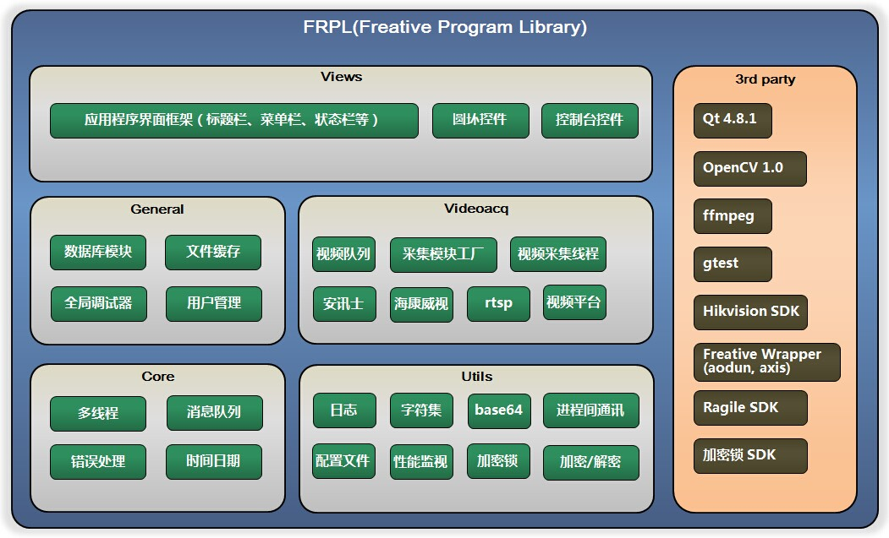
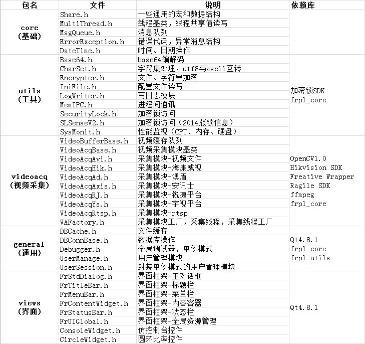
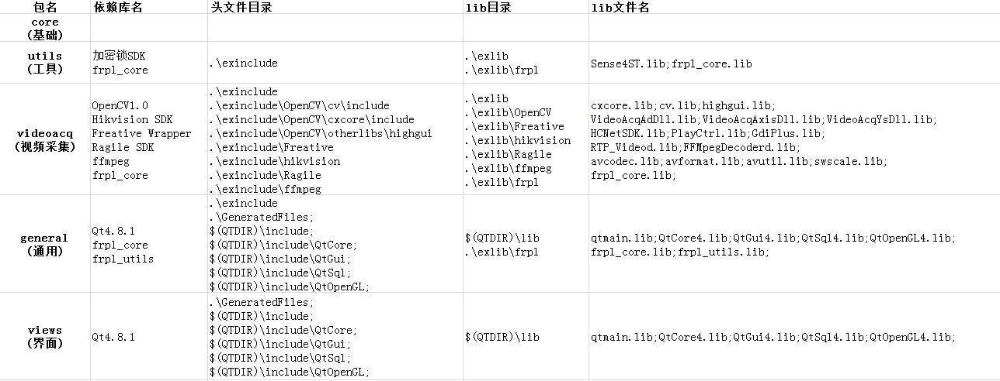

svn地址: https://192.168.1.86/svn/RepositoryFRPL/ProgramLibary/trunk


1）获取源代码/链接库
使用tortoiseSVN或其他svn工具
checkout 库文件至本地 https://192.168.1.86/svn/RepositoryFRPL/ProgramLibary/trunk/ProgramLibary/build
checkout 第三方库文件至本地 https://192.168.1.86/svn/RepositoryFRPL/ProgramLibary/trunk/ProgramLibary/3rdparty
2）使用静态链接库进行开发
将build中include和lib文件夹下内容复制出来，例如复制到.\exinclude和.\exlib
build/include/frpl -> .\exinclude\frpl
build/lib/frpl -> .\exlib\frpl
在工程属性 - VC++目录 - 头文件目录下添加
.\exinclude
在工程属性 - VC++目录 - lib文件目录下添加
.\exlib\frpl
在工程属性 - 链接器 - 输入 - 附加依赖库下添加
frpl_core.lib;frpl_utils.lib;frpl_videoacq.lib;frpl_general.lib;frpl_views.lib
由于frpl会依赖第三方库，因此需要对第三方库做专门的配置
将3rdparty中include和lib文件夹下内容复制出来，例如复制到.\exinclude和.\exlib
3rdparty/include/hikvision -> .\exinclude\hikvision
3rdparty/lib/hikvision -> .\lib\hikvision
...
在工程属性 - VC++目录 - 头文件目录下添加
.\exinclude
.\exinclude\OpenCV\cv\include
.\exinclude\OpenCV\cxcore\include
.\exinclude\OpenCV\otherlibs\highgui
.\exinclude\Freative
.\exinclude\hikvision
.\exinclude\Ragile
.\exinclude\ffmpeg
.\exinclude\frpl\views\Generated Files
在工程属性 - VC++目录 - lib文件目录下添加
.\exlib
.\exlib\OpenCV
.\exlib\Freative
.\exlib\hikvision
.\exlib\Ragile
.\exlib\ffmpeg
安装Qt4.8.1支持库
- 下载Qt4.8.1安装包
- 安装qt-vs-addin
- 新建Qt工程（是的，使用完整代码库需要Qt工程），工程会自动将Qt的头文件和lib目录添加进来
在工程属性 - 链接器 - 输入 - 附加依赖库下添加
qtmain.lib;QtCore4.lib;QtGui4.lib;QtSql4.lib;QtOpenGL4.lib;
cxcore.lib;cv.lib;highgui.lib;
Sense4ST.lib;
HCNetSDK.lib;PlayCtrl.lib;GdiPlus.lib;
VideoAcqAdDll.lib;VideoAcqAxisDll.lib;VideoAcqYsDll.lib;
RTP_Videod.lib;FFMpegDecoderd.lib;
avcodec.lib;avformat.lib;avutil.lib;swscale.lib;
所有的动态链接库统一放在了一个文件夹下：3rdparty/bin
将3rdparty/bin复制出来，例如复制到C:\FRPL\bin，将如下路径添加进环境变量
C:\FRPL\bin
C:\FRPL\bin\bin_ffmpeg
C:\FRPL\bin\bin_yushi
C:\FRPL\bin\bin_freative
3）使用源代码进行开发
将build中include和src文件夹下内容复制出来，例如复制到.\include和.\src
build/include/frpl -> .\include\frpl
build/src/frpl -> .\src\frpl
在工程属性 - VC++目录 - 头文件目录下添加
.\include
添加所有src内的文件至工程中
按2）中所述配置依赖库
4）只使用部分代码库
完整FRPL有较多依赖库，例如videoacq会依赖众多第三方SDK，general和views会依赖qt。
如果在实际开发中不需要这些功能则可以相应的只加载某几个包。例如core不依赖其他库，可以直接用
下表是单独加载某个库时需要配置的对应文件列表

很遗憾，以下文档暂时还没有补充完毕，欢迎大家积极投入到代码库建设工作中来